Literature Review
Louppe provides a theoretical and practical analysis of Random Forests, explaining how ensemble learning reduces variance and how impurity-based feature importance is computed [1], supporting our use of Random Forest and guiding interpretation of influential attributes. Strobl et al. show that standard Random Forest importance measures can be biased toward certain predictor types, especially when variables differ in scale or category count [2], which is important given our mixed feature types. He and Choi demonstrate that ensemble machine learning methods for sports outcome prediction can achieve strong predictive performance while maintaining interpretability [3], reinforcing the suitability of ensemble models like Random Forest for our task.
Dataset Description
The UFC Dataset is a comprehensive MMA dataset containing every recorded UFC fight along with detailed fighter statistics.
Dataset: Kaggle — UFC Dataset 2024
The dataset includes:
- Complete fight history for all UFC events
- Fight-level statistics for both competitors in each bout
- Fighter performance metrics at the time of each fight (e.g., strikes landed, takedowns, submissions)
- Fighter profiles with physical attributes and career records
- Aggregated career statistics reflecting most recent information
This allows us to analyze:
- How pre-fight statistics relate to fight outcomes
- Predictive modeling using stats available at the time of the fight
- Current fighter comparisons based on up-to-date profile data
Because it includes historical fight-level data and a current snapshot of fighter profiles, the dataset supports the analysis we are looking to achieve.
Problem Statement
When we debate upcoming UFC fights, we often disagree about which statistics actually matter. One of us might emphasize striking accuracy or reach; another might argue that takedown defense or experience is more important. Without a data-driven way to weigh these factors, we can't agree on which pre-fight stats are most predictive of who wins.
The core challenge is to model fight outcomes using only pre-fight data, so the system reflects real-world constraints and gives us a shared, evidence-based way to settle our debates.
Motivation
We're a group of sports fans who regularly watch UFC events. Half the fun is debating the fights before they start: who has the better striking, whose grappling will hold up, and whether reach or experience will make the difference. We're always making predictions and arguing our cases like professionals. This project adds a data-driven layer to something we already love. Instead of going off gut feeling or reputation, we want to see if the numbers back up our predictions. Can striking accuracy predict outcomes? Does reach matter as much as we think? Do certain styles consistently win? By building a model using real UFC data, we're putting our fight-night debates to the test and combining our interest in sports with machine learning in a way that's analytical and fun.
Data Preprocessing
When looking at our data, the first thing we realized was that one of our datasets, "ufc_fighters_avg," would not be feasible to use. It contains UFC fighters' average stats from their career as of 2024, meaning that using it to train our model would introduce future data leakage — for example, predicting a fighter's 2020 bout using averages that incorporate their 2022 and 2024 performances. As a result, we used "ufc_event_fight_stats," which contains per-fight statistics dating back to 1994. After loading the data, we replaced control times recorded as "NA" with zeros, dropped no-contest fights as irrelevant to our prediction goal, converted date of birth to datetime, and added a winner column encoded as 1 if fighter 1 won and 0 if fighter 2 won. We also encoded weight class as an integer representation and dropped it from the final feature set after computing differentials.
encodes weight class as follows:
| Encoding | Men's | Women's |
|---|---|---|
| 0 | Flyweight | Flyweight |
| 1 | Bantamweight | Strawweight |
| 2 | Featherweight | Bantamweight |
| 3 | Lightweight | Featherweight |
| 4 | Welterweight | Other |
| 5 | Middleweight | |
| 6 | Light Heavyweight | |
| 7 | Heavyweight | |
| 8 | Catch Weight | |
| 9 | Open Weight | |
| 10 | Other |
Because we shifted to using per-fight event data rather than pre-aggregated career stats, we had to compute our own pre-fight averages from scratch. We joined "ufc_event_fight_stats" with "ufc_events" to establish chronological fight ordering, then computed shifted cumulative statistics for each fighter across all their prior fights — covering metrics such as strikes, knockdowns, takedowns, submissions, and control time. These cumulative values were shifted so that each fight's row only reflects data available before that fight occurred. We then derived each fighter's prior record by computing cumulative wins, losses, and draws before each bout, and defined experience as the total count of prior fights. Cumulative totals were divided by experience to produce per-fight averages, with averages set to zero for fighters with no prior fights.
To capture recent fighter form, we added a set of recency features alongside the cumulative averages. Equal-weighted cumulative averages treat a fight from eight years ago the same as one from last month, which is problematic since fighters evolve over time. We computed last-4-fight rolling averages for every stat column, calculated before the cumulative stats overwrote the raw values so that the rolling window reflects the four most recent prior fights. This dual feature approach gives models both a long-run baseline and a recent form signal, with last-4 differentials computed alongside the standard differentials.
After computing fight-level statistics, we merged in fighter profile attributes — height, reach, weight, date of birth, and stance — from the fighters table, and calculated each fighter's age at the time of the fight. We then dropped rows where age, height, reach, or stance was unknown, as these fields are central to our feature set. We also overhauled our stance encoding. The original approach created dummy variables for matchup combinations (e.g., Orthodox_vs_Southpaw), which introduced redundancy and made the symmetrization step more fragile. We replaced this with per-fighter one-hot encoding, producing columns f1_orthodox, f1_southpaw, f1_switch and their f2 counterparts, with "Other" (which groups Open Stance and Sideways, totaling fewer than 10 fighters) as the dropped reference category. This produces six clean columns that work consistently across all three models.
We then generated difference-based features by subtracting fighter 2's values from fighter 1's for all statistics, including the last-4 rolling averages. For age, we retained both the individual age columns (f1_age_during, f2_age_during) and the age differential (diff_fighter_dob), since tree-based models can exploit the absolute values directly while the differential captures the relative gap in one feature. To address the question of how low experience affects model quality, we produced two filtered versions of the dataset — one requiring both fighters to have at least 1 prior fight (exp ≥ 1) and one requiring at least 2 (exp ≥ 2) — to empirically compare whether removing fights with sparse statistical histories improves performance.
Finally, we split the data into train, validation, and test sets before symmetrizing to prevent mirror-fight leakage across splits. StandardScaler was fit exclusively on the training set and applied to the validation and test sets. We then symmetrized each split independently by duplicating every fight with the fighters swapped — negating all differentials, exchanging the per-fighter stance columns and individual age columns, and flipping the winner label. This ensures the model learns underlying statistical and physical advantages rather than any positional bias toward fighter 1 or fighter 2, and results in perfectly balanced classes across all splits.
Logistic Regression
Logistic Regression is a supervised machine learning model used for classification. For our UFC fight prediction model, we selected it as our baseline algorithm because it is good for determining binary classifications, it outputs a probabilistic value a specific fighter would win a bout, and it is fast and does not require much computational power to train and run.
For this project, we use it to predict whether Fighter 1 (class 0) or Fighter 2 (class 1) will win the matchup. Unlike more complex models, logistic regression allows us to easily examine feature coefficients to understand the relationship between our engineered features (such as age difference, reach difference, and strike accuracy difference) and the likelihood of a victory. Furthermore, rather than just outputting a strict win/loss classification, the logistic function maps the output to a probability between 0 and 1. This probabilistic output is particularly valuable in the context of sports predictions, as it provides a measure of confidence for each predicted matchup rather than a simple categorical guess.
Implementation and Training
We built the model using Python's scikit-learn library, and used a Pipeline to chain our preprocessed data into a valuable baseline machine learning model using StandardScaler and LogisticRegression. Because logistic regression is sensitive to the scale of the input data and our dataset contains variables with different ranges, we used StandardScaler to normalize the processed data before passing it to LogisticRegression.
The model was trained on the symmetrized dataset discussed in the preprocessing section. By duplicating the data and switching the fighters, we ensured the logistic regression model learned the underlying physical and statistical advantages rather than defaulting to a biased baseline that favors fighter 1 or 2. This was run on three datasets: base, exp1, and exp2.
Model Analysis and Evaluation
To evaluate the model's performance beyond standard accuracy, we calculated several classification metrics and analyzed the probabilistic outputs. The baseline logistic regression model yielded the following results on the three datasets: base, exp1, and exp2.
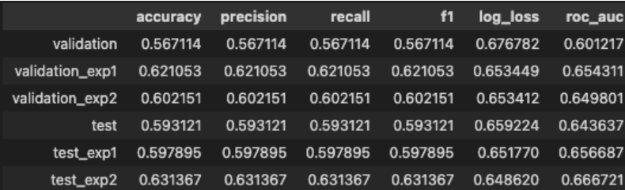
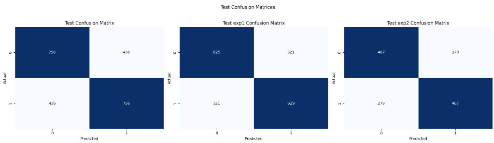
The accuracy, precision, recall, f1 scores and confusion matrices confirm a balanced performance. For all datasets, the model correctly predicted the same amount of true positives and true negatives as well as false positives and false negatives. In the case of the base dataset, it was 756 true positives (Fighter 1 wins) and 756 true negatives (Fighter 2 wins) and 436 false positives and 436 false negatives, where the model incorrectly chose the bout outcome. This balanced error is a direct result of our dataset duplication and symmetrization step during preprocessing, ensuring the model doesn't inherently favor one side.
To evaluate the quality of the model's predicted probabilities and betting potential, we utilized Log-Loss (Cross-Entropy Loss):
- Log-Loss: We recorded a Log-Loss of 0.658194. Because a completely random binary guess yields a baseline log-loss of approximately 0.693, a score of 0.658194 demonstrates that the model has successfully learned underlying patterns and is assigning higher probabilities to the correct outcomes. While it establishes a solid baseline, the log-loss score leaves lots of room for improvement that we aim to capture with more complex algorithms.
- Log-Loss Comparison and Betting Simulation: On our testing dataset of 646 matches, we compared the log-loss of our model's predicted probabilities against the bookmakers' implied probabilities. Our model achieved an average log-loss of 0.66936, while the market odds achieved a lower log-loss of 0.62158. Because a lower log-loss indicates predictions that are closer to the actual results, this tells us that the market odds are better calibrated and more accurate at estimating the true probabilities of fight outcomes than our model.
Despite the market's overall efficiency, we ran a historical betting simulation on these fights to see if our model could successfully identify and exploit isolated mispricings. To do this, we calculated our perceived "edge" by subtracting the market's implied win probability from our model's predicted win probability.
Our simulation followed a strict, systematic betting strategy:
- The Threshold: We only consider placing a bet if our model identifies an edge greater than 5% (0.05) for a fighter.
- The Selection: If both fighters show an edge, we only bet on the fighter with the higher edge. Otherwise, if no one meets the 5% threshold, we pass on the fight entirely.
- The Wager & Payout: We used a flat betting system, wagering exactly $10 on every qualifying fight. Losing bets simply lose the $10, while winning bets pay out strictly according to their standard American odds.
The results of this simulation are shown below. Interestingly, this targeted strategy proved to be marginally effective on the testing data. While a positive return here does not guarantee long-term profitability, especially given that the bookmakers' overall log-loss is still superior, it provides promising evidence that our model is capable of finding localized value in UFC betting markets.
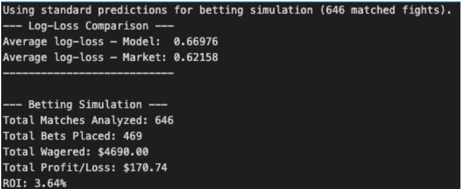
To better understand where our model excels and where it struggles, we analyzed the test accuracy across different bins (all equally sized) of our top features, where a bin is a range of values used to group our continuous values. Instead of relying solely on a single global accuracy score, we segmented the test data based on the magnitude of the difference between fighters for key metrics.
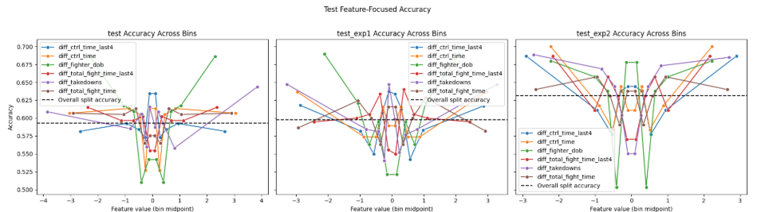
The results from grouping these features reveal an interesting, split pattern depending on the type of statistic. For features like age (diff_fighter_dob) and takedown ability (diff_takedowns), the model behaves exactly as expected: when there is a massive gap between the fighters, the model easily picks the winner, but when they are evenly matched near zero, the accuracy drops. This shows that our logistic regression algorithm is highly responsive to the magnitude of the differences between fighters for various different features.
Additionally, we can see which features are the most directly and indirectly proportional to a fighter's success in a bout. This is seen by analyzing which features have the highest coefficients in the logistic regression algorithm. Some of these features seem intuitive, like difference in control time leading to a better chance at winning, while others aren't very intuitive, like a fighter's stance, which is interesting to see.
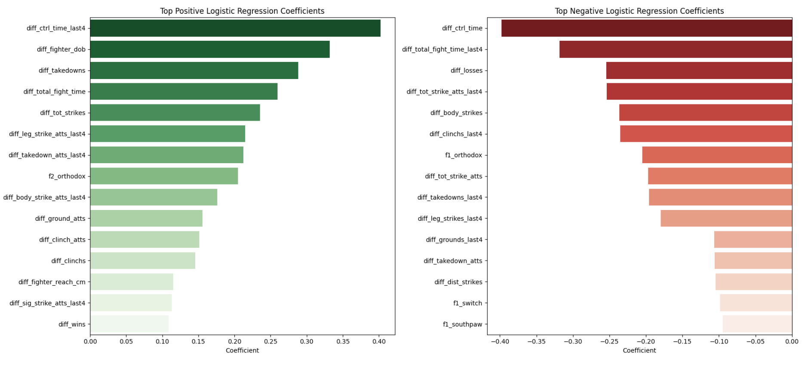
Finally we can compare the ROC curve of each of the datasets. The curve visualizes our logistic regression model's ability to distinguish between winning and losing fighters across various probability thresholds. For reference, a 0.5 area under the curve for an ROC curve means that the probability is 50/50, a coinflip.
As seen in the graph, our model's curve bows above the random-guess baseline, indicating a positive predictive capability. Specifically, the model achieves an AUC of 0.6959 for the base dataset, 0.7142 for exp1, and 0.6972 for exp2. In practical terms, this means that if we randomly select one fight where a specific fighter won and one where they lost on the base dataset, there is a 69.59% chance that our model assigned a higher win probability to the correct outcome. While an AUC in this range might seem lower compared to traditional machine learning tasks, it is quite reasonable and honestly pretty good in the context of sports forecasting. UFC fights are inherently high-variance events heavily influenced by external factors such as a fighter's mental state, a lucky strike, or an unexpected injury. The graph demonstrates that our model has successfully extracted meaningful patterns from the historical data to gain a measurable edge over a coin flip, confirming its utility in evaluating fight probabilities despite the inherent noise of the sport.
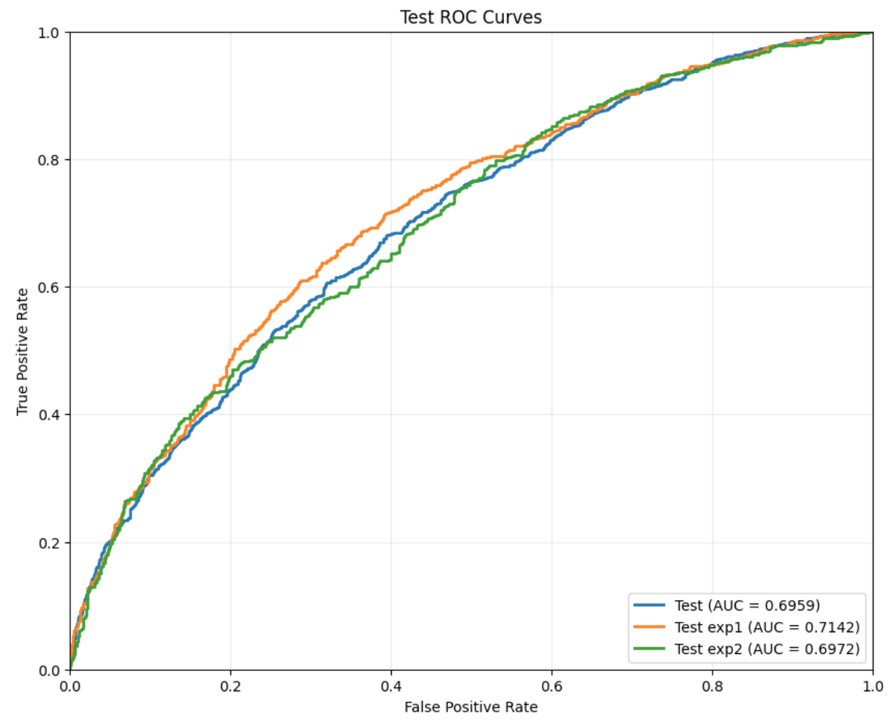
XGBoost
XGBoost is a supervised machine learning algorithm built on the gradient boosted decision tree framework. For our UFC fight prediction model, we selected it as an upgrade from our logistic regression baseline because it captures non-linear relationships between features, is robust to outliers, requires no feature scaling, and includes built-in regularization that prevents overfitting. Like logistic regression, it produces class probabilities rather than strict binary predictions, preserving the probabilistic value of our model's output.
For this project, we use it to predict whether Fighter 1 (class 0) or Fighter 2 (class 1) will win the matchup. Unlike logistic regression, which assumes a linear boundary between classes, XGBoost builds an ensemble of decision trees sequentially, where each new tree corrects the residual errors of the previous one using the gradient of the loss function as a signal for where the current predictions are most wrong. This allows the model to detect complex, higher-order interactions between our engineered features — such as combined disadvantages in reach, age, and striking accuracy — that a linear model would miss entirely.
Dataset Experiments
To evaluate how experience filtering affects predictive performance, we trained and evaluated three separate XGBoost models on three different versions of the dataset:
- General — the full dataset with no experience filter, containing 7,468 training fights across 45 features
- Exp1 — filtered to fights where both fighters have at least one prior UFC fight, containing 6,644 training fights across 63 features
- Exp2 — filtered to fights where both fighters have at least two prior UFC fights, containing 5,212 training fights across 63 features
The Exp1 and Exp2 datasets contain more features than the General dataset because they include per-fighter rolling last-4-fight averages and additional biographical statistics that are only meaningful once a fighter has prior UFC history to draw from. The General dataset includes debut fighters whose rolling statistics would all be zero, which adds noise rather than signal.
Implementation and Training
We built all three models using Python's XGBoost library with the XGBClassifier interface. Because XGBoost is a tree-based method, it is invariant to the scale of input features, so no standardization was required for the General model. For Exp1 and Exp2, StandardScaler was applied during feature engineering to normalize the differential features before they were saved to disk. In all cases, the fight_id and is_mirror columns were excluded from training, as fight_id is a non-informative identifier and is_mirror is a data construction artifact rather than a predictive feature.
All three models were trained on symmetrized datasets where each fight is duplicated with the fighters swapped, ensuring the model learns underlying physical and statistical advantages rather than a positional bias toward Fighter 1 or Fighter 2.
To identify strong starting parameters, we used Optuna to run 100 trials of Bayesian hyperparameter optimization for each experiment. Consistent with the original model, the hand-tuned baseline parameters matched or outperformed the Optuna results on held-out test data, largely because Optuna's use of the validation set for early stopping inflates its reported accuracy. All three final models used the following shared configuration:
- n_estimators=500 — maximum number of trees to build
- learning_rate=0.05 — how aggressively each tree corrects the last
- max_depth=5 — limits tree complexity to reduce overfitting
- subsample=0.649 — trains each tree on a random 65% of rows
- colsample_bytree=0.649 — trains each tree on a random 65% of features
- early_stopping_rounds=20 — halts training if validation loss fails to improve for 20 consecutive rounds
Early stopping triggered at tree 136 for the General model, tree 93 for Exp1, and tree 105 for Exp2, preventing unnecessary computation and overfitting beyond the point of diminishing returns.
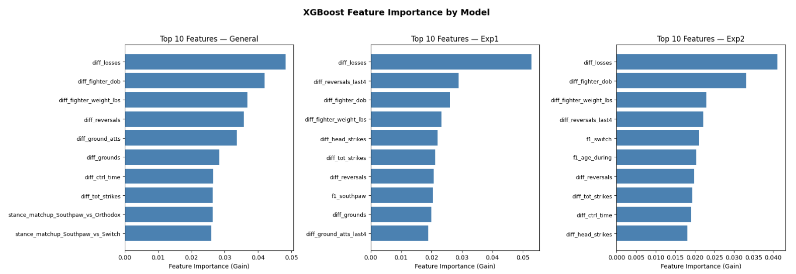
Across all three models, career-level differentials such as experience, wins, reach, and age consistently rank among the most predictive features, reflecting that a fighter's track record and physical attributes carry strong predictive weight regardless of the dataset used. The Exp1 and Exp2 models notably lean more on the last-4-fight rolling averages, particularly differential striking and control time over recent fights — these are unavailable in the General model since debut fighters have no fight history to draw from, making recency features more informative as experience thresholds increase.
Model Analysis and Evaluation
The three models produced the following results:
| Model | Validation Accuracy | Test Accuracy |
|---|---|---|
| General | 60.51% | 63.90% |
| Exp1 | 61.79% | 64.89% |
| Exp2 | 64.52% | 60.79% |
Exp1 achieved the highest test accuracy at 64.89%, a meaningful improvement over both the General model and our logistic regression baseline. This suggests that filtering out debut fighters whose historical statistics carry no real signal provides a cleaner learning environment even at the cost of a smaller dataset. The General model's 63.90% test accuracy confirms that including fighters with no prior history adds noise that slightly dampens performance.
Exp2 presents a more nuanced result with its validation accuracy of 64.52% — the highest across all three models — but its test accuracy drops to 60.79%, suggesting the model overfit slightly to the validation set during training. This likely occurred due to the smaller dataset size of 5,212 training fights. While filtering to fighters with at least two fights produces higher-quality features, the reduced data volume makes it harder to generalize.
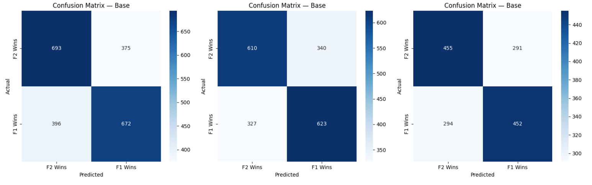
The confusion matrices confirm balanced performance across both classes for all three models, with no meaningful bias toward predicting Fighter 1 or Fighter 2 — a direct result of the dataset symmetrization step. For the General model specifically, the model correctly identified Fighter 1 winning 672 times and Fighter 2 winning 693 times out of the test set, with misclassifications nearly symmetric at 375 and 396, indicating the model struggles equally in both directions rather than systematically favoring one side.
The training log-loss versus validation log-loss gap across all three models confirms a moderate degree of overfitting that early stopping successfully contained. For the General model, training log-loss converged to 0.528 while validation log-loss settled at 0.654. For Exp1, training reached 0.541 against a validation of 0.649. For Exp2, training reached 0.504 against a validation of 0.630. In all cases the validation log-loss remained below the random-guess baseline of approximately 0.693, confirming that all three models extracted genuine predictive signal from the data.
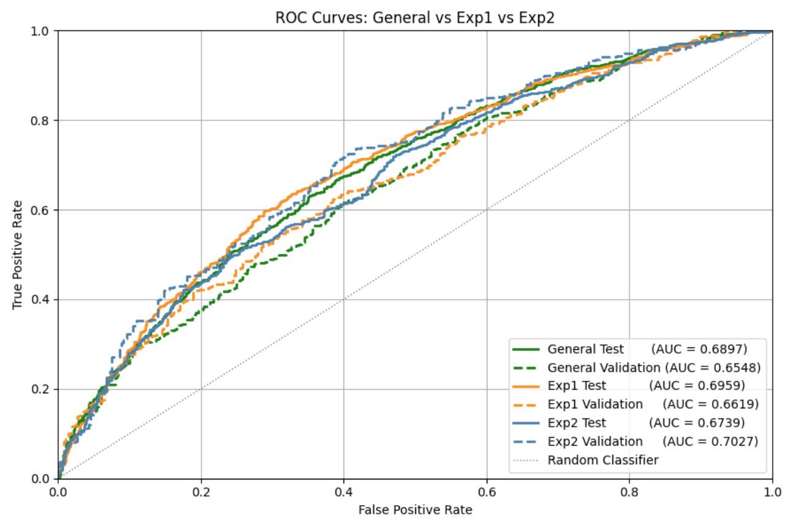
The ROC curves and AUC scores reinforce these findings. Exp1 shows the strongest and most consistent separation between its test and validation curves, while Exp2's curves diverge more noticeably, consistent with its val/test accuracy gap. The General model sits between the two. Across all three experiments, AUC values above 0.60 confirm the models are meaningfully better than random chance, even in a sport with an inherently high upset rate.
Random Forest
Random Forest is a supervised machine learning model used for classification. For our UFC fight prediction model, we selected it as a stronger non-linear algorithm because it performs well on binary classification tasks, outputs probabilistic win values for each fighter, and can capture complex feature interactions without requiring strict linear assumptions.
For this project, we use it to predict whether Fighter 1 or Fighter 2 will win the matchup. Unlike logistic regression, Random Forest combines many decision trees and aggregates their predictions, which helps reduce overfitting and improves generalization on diverse fight profiles. In addition, rather than only producing a strict win/loss output, Random Forest provides probabilities between 0 and 1. This probabilistic output is highly useful in sports prediction because it gives a confidence measure for each matchup, not just a categorical prediction.
Implementation and Training
We built the model using Python's scikit-learn library and trained a RandomForestClassifier with hyperparameter tuning through RandomizedSearchCV. The model was trained on the symmetrized datasets described in preprocessing. By duplicating each fight and swapping fighter positions, the model learns true statistical and physical advantages instead of inheriting positional bias for Fighter 1 or Fighter 2. We ran this model on all three dataset configurations: base, exp1, and exp2. We also ensured metadata columns were excluded from modeling features (including mirrored/index identifiers such as is_mirror, fight_id, and fight index-style columns).
Model Analysis and Evaluation
To evaluate Random Forest beyond accuracy, we analyzed accuracy, precision, recall, F1, log-loss, ROC-AUC, confusion matrices, ROC curves, and feature importance. The metrics table below shows train, validation, and test performance:
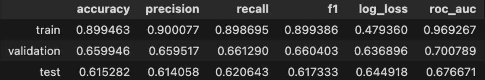
For the exp2 dataset, the model produced a validation accuracy of 0.659946, precision of 0.659517, recall of 0.661290, and an F1-score of 0.660403 on 744 validation fights. This indicates balanced predictive behavior across both classes, with nearly equal treatment of Fighter 1 and Fighter 2 outcomes. The confusion matrix below confirms this symmetry on the test set.
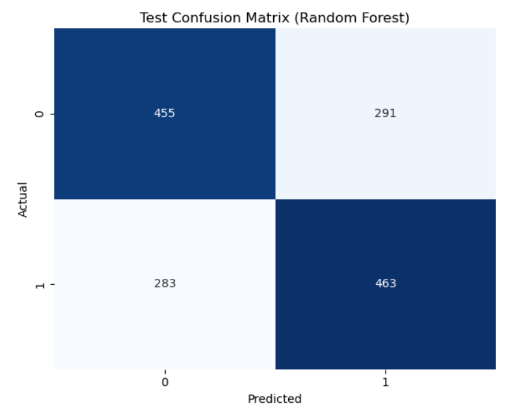
The ROC curve below illustrates a notable train-validation-test gap. The train AUC of 0.9693 compared to a validation AUC of 0.7008 and test AUC of 0.6767 reveals significant overfitting on the training data. Despite this, the test AUC remains well above the 0.5 random baseline, confirming meaningful predictive signal. The large train-to-test gap suggests the model memorized training patterns and would benefit from further regularization through stronger constraints on tree depth or minimum samples per leaf.
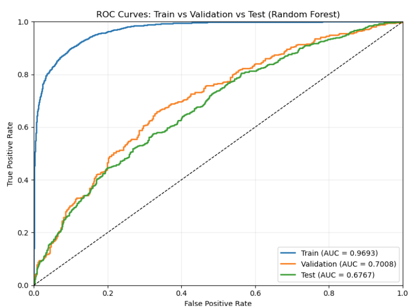
Model Comparisons
XGBoost achieved the highest accuracy at 64.89%, followed closely by Logistic Regression at 63.14% and then Random Forest at 61.53%. These results were not what we initially expected given the nature of each algorithm. We expected performance to improve with model complexity, but our validation results indicate that Logistic Regression generalized better than Random Forest on this feature set. Logistic Regression is linear and works best when relationships are mostly additive; Random Forest captures non-linear interactions through many trees, but here that flexibility likely increases variance and overfitting rather than adding useful signals. XGBoost goes a step further by sequentially correcting prior tree errors, so while it is usually the strongest non-linear learner, these results suggest that additional complexity beyond a linear boundary did not consistently translate into better validation performance in our current setup.
Logistic Regression's most important feature was the differential in control time, Random Forest had date of birth differential, and XGBoost had the differential in losses. This makes sense since a linear model would weight a feature that is more linearly separable highly — the fighter who has more time in control on average is most likely the more skilled fighter, and a linear model can exploit this signal directly. For Random Forest, having a date of birth differential as the most important suggests it found meaningful interaction effects between age and other variables, something only a tree-based model is equipped to detect. Lastly, XGBoost finding a historical signal (losses differential) makes sense since it is a sequential learning process.
Logistic Regression is fast and interpretable with reliable probability outputs, but its linear assumption is its core weakness. Random Forest addresses this through its ensemble of trees, giving it strong generalization and noise resistance, though this comes at the cost of interpretability and a risk of overfitting to training quirks if left untuned. XGBoost is the most powerful of the three because it combines tree flexibility with sequential error correction and built-in regularization, but that power comes with greater complexity and more hyperparameters to manage.
All models achieved our original goal of 60% accuracy, and XGBoost was clearly the most comprehensive and best-performing model.
References
- [1] G. Louppe, Understanding Random Forests: From Theory to Practice, arXiv:1407.7502, Jul. 2014. [Online]. Available: https://arxiv.org/abs/1407.7502
- [2] C. Strobl, A.-L. Boulesteix, A. Zeileis, and T. Hothorn, "Bias in random forest variable importance measures: Illustrations, sources and a solution," BMC Bioinformatics, vol. 8, no. 25, 2007, doi: 10.1186/1471-2105-8-25.
- [3] Y. He and J. Choi, "Stacked ensemble model for NBA game outcome prediction," Scientific Reports, vol. 15, 2025, doi: 10.1038/s41598-025-13657-1.
| GANTT CHART | UFC Prediction Model Project Group 59 Timeline | ||||
| TASK TITLE | TASK OWNER | START DATE | DUE DATE | DURATION |
Jan-26
Feb-26
Mar-26
Apr-26
May-26
M T W T F S S M T W T F S S M T W T F S S M T W T F S S M T W T F S S
|
|---|---|---|---|---|---|
| Project Proposal | |||||
| Project Team Composition | All | 1/17/26 | 2/2/26 | 15 | |
| Project Proposal | All | 1/1/26 | 2/23/26 | 54 | |
| Introduction & Background | John Tillman | 2/2/26 | 2/23/26 | 21 | |
| Problem Definition | Max Pargman | 2/2/26 | 2/23/26 | 21 | |
| Methods | Connor Mcilhinney & Andrew Mattei | 2/2/26 | 2/23/26 | 21 | |
| Potential Datasets | Connor Mcilhinney & Andrew Mattei | 2/2/26 | 2/23/26 | 21 | |
| Potential Results & Discussion | Rajan Kadaba | 2/2/26 | 2/23/26 | 21 | |
| Video Creation & Recording | All | 2/10/26 | 2/23/26 | 13 | |
| Code Repo | Connor Mcilhinney | 2/10/26 | 2/23/26 | 13 | |
| Midterm Report | |||||
| Model 1 (M1) Design & Selection | All | 2/17/26 | 2/27/26 | 10 | |
| M1 Data Cleaning | Max Pargman | 2/17/26 | 2/27/26 | 10 | |
| M1 Data Visualization | Rajan Kadaba | 2/17/26 | 2/27/26 | 10 | |
| M1 Feature Reduction | Connor Mcilhinney | 2/17/26 | 2/27/26 | 10 | |
| M1 Implementation & Coding | Andrew Mattei & Connor Mcilhinney | 2/28/26 | 3/17/26 | 19 | |
| M1 Results Evaluation | All | 3/18/26 | 3/20/26 | 2 | |
| Model 2 (M2) Design & Selection | All | 2/28/26 | 3/6/26 | 8 | |
| M2 Data Cleaning | John Tillman | 2/28/26 | 3/6/26 | 8 | |
| M2 Data Visualization | Connor Mcilhinney | 2/28/26 | 3/6/26 | 8 | |
| M2 Implementation & Coding | Max Pargman & Rajan Kadaba | 3/7/26 | 3/17/26 | 10 | |
| M2 Results Evaluation | All | 3/18/26 | 3/20/26 | 2 | |
| Midterm Report | All | 3/28/26 | 3/29/26 | 1 | |
| Final Report | |||||
| Model 3 (M3) Design & Selection | All | 3/14/26 | 3/20/26 | 6 | |
| M3 Data Cleaning | Connor Mcilhinney | 3/14/26 | 3/20/26 | 6 | |
| M3 Data Visualization | Andrew Mattei | 3/14/26 | 3/20/26 | 6 | |
| M3 Feature Reduction | Rajan Kadaba | 3/14/26 | 3/20/26 | 6 | |
| M3 Implementation & Coding | Max Pargman & John Tillman | 4/6/26 | 4/14/26 | 8 | |
| M3 Results Evaluation | All | 4/15/26 | 4/17/26 | 2 | |
| M1–M3 Comparison | All | 4/18/26 | 4/26/26 | 8 | |
| Video Creation & Recording | All | 4/18/26 | 4/26/26 | 8 | |
| Code Repo | All | 4/18/26 | 4/26/26 | 8 | |
| Final Report | All | 4/18/26 | 4/28/26 | 30 | |
Contribution Table
| Name | Contributions |
|---|---|
| Connor Mcilhinney | Data preprocessing and feature pipeline work, finding datasets, GitHub Pages, Literature Review, Idea Generation, problem statement |
| Max Pargman | Methods and Data Processing, solution brainstorming, logistics handling |
| Andrew Mattei | Programmed logistic regression model and evaluation metrics for it, wrote that section of the report |
| Rajan Kadaba | Data cleaning and feature engineering write-up, helped with feature engineering logic |
| John Tillman | Primary email contact with course mentor, created GitHub repo, results and discussion, organization, solution brainstorming |